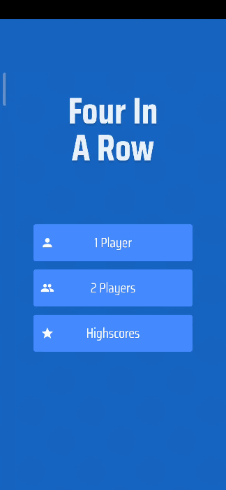

Flutter作为近年来的新兴混合开发语言, 一直备受关注. 既然Flutter这么好用, 并且宣传渲染帧率可高达60fps.
那我们是不是可以用它开发游戏呢?
答案是肯定的, 某个Flutter大神制作了一款框架, 名为Flame.
如果你没有代码基础, 想开发一款自己的游戏, 那么Flutter + Flame也许是比较好的选择.
先来看一下使用Flutter + Flame做的几款游戏吧:
DarknessDungeon 地牢游戏

4 in A Row 四子棋益智游戏

嗯…看起来还不错
阿航在之前的空闲时间也使用了该框架进行了游戏开发, 体验还不错.
这个是游戏大体的框架结构:

使用Flame开发游戏, 只需要先创建Game loop(游戏循环/游戏场景), 维护好update函数(计算各种数值)以及render函数(渲染屏幕).
在这里贴出一个Flutter开发与其他游戏开发引擎的对比:
| Flutter + Flame | Unity、虚幻等主流开发引擎 | |
|---|---|---|
| 适合独立开发 | 很适合 | 适合 |
| 需要掌握的技术 | 仅Flutter | 开发语言+软件使用 |
| 学习难度 | 容易 | 中等甚至困难 |
| 开发难度 | 容易 | 中等甚至困难 |
| 国内文档支持 | 较少, 阿航的技术小站将会提供中文文档 | 丰富 |
| 3d支持 | 暂无 | 3d支持很好 |
| 开发大型游戏 | 适合 | 非常适合 |
| 开发小型游戏 | 非常适合 | 适合 |
我已经在博客里写了这个框架的教程以及实例教学！
立即访问《Flutter 游戏开发(flame) 01 初识Flame 》开始学习!
对文章有任何问题、 建议, 欢迎在评论区下方评论. 作者将会尽力、尽快回复.
最新、更多、更好的教程/博客/资讯, 欢迎访问我的官网: 阿航的技术小站 .